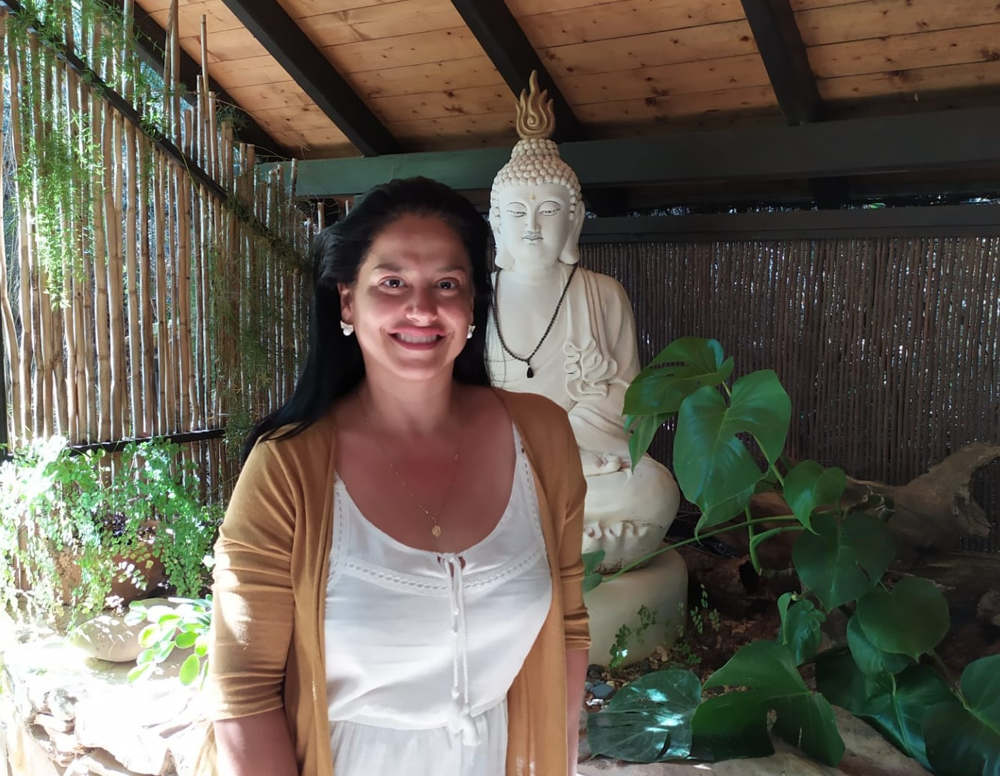

Cresci levando comigo inquietudes e angústias que não sabia explicar, pela infância
sensitiva e sensível que tive. Junto à tudo, a coragem de desvendar caminhos!
Comecei pela Pedagogia e com a Psicopedagogia descobri o interesse pela psique humana.
Nasceu
a paixão pela Psicologia e decidi por abraçar a Psicanálise, sempre
esperando que as minhas formações explicariam os meus porquês. Ao mesmo tempo que os estudos
permeavam o meu dia a dia, cursos e atendimentos, ainda sentia alguns limites dentro da
prática e que precisava de mergulhos mais profundos. Sentia que deveria primeiro sanar todos
os pontos de interrogação para exercer minha vocação com acertividade. O sofrimento humano
me causava grandes questionamentos. Algo me movia para mais. Comecei então a buscar novos
caminhos, viajei e morei em alguns lugares pelo Brasil, sempre investigando tudo que
poderia me conceder respostas! Em algum período estive em dois monastérios, meu lar por
quatro anos, onde fui iniciada no conhecimento da Natureza Real em nós e muitas formações em
diversas áreas se seguiram, retiros e especializações. Me tornei professora e lecionava,
práticas de meditação, autoconhecimento, psicanálise e todo o escopo para o "despertar da
consciência", porém as dúvidas ainda me acompanhavam.
Enveredei pelos caminhos das Yogas, Massoterapia, Elementoterapia, Chacras,
Cristaloterapia, Tarot Quântico, Terapias Corporais complemetares,
Eneagrama, Tantra, Registros Akáshicos, Cabala,
Agrocultura, Medicinas da Floresta, Bioconstrução, Cursos na área de alimentação saudável, Física Quântica na espitualidade,
Cabala, Heiki, Contelação Familiar, entre outras abordagens e metodologias que me trouxeram um campo de
experiência terapêutica muito significativa, o que pude sempre compartilhar. Acima de tudo,
serviram
ao processo de dissolução e catarse pessoal, bem como iluminaram compreensões sobre a mente
e seus mecanismos. E, no "processo de busca", rumo à Europa por cinco anos, onde residi e atuei. Seguiram os retiros e
investigações de algo mais que pudesse ser acertivo nas intervenções, questões humanas e de auto-análise. No entanto, a pergunta essencial que me acompanhava ainda não
havia descansado:
Quem Sou Eu Realmente?
Depois de mais de 25 anos de busca o olhar da não-dualidade me arrebatou e fui abandonando
muitos conhecimentos acumulados. A investigação a respeito da personalidade e do ‘eu’ que
acreditava ser, passou a ser direcionada para ‘Isso’ que esteve sempre aqui observando o
corpo-mente. Lembro que durante um retiro de silêncio, a partir desse momento, vivi tempos
de maravilhamento e de crises intensas. Passei a questionar todo o trabalho das terapias
focadas na
ideia de melhoramento deste ‘eu’ ilusório. Parecia haver uma outra via, mais direta, uma via
do ‘não-eu’ e do reconhecimento dessa testemunha observadora e neutra, que está além da
mente e dos pensamentos. Minha caminhada havia desaparecido e novos rumos surgiram.
Pouco a pouco as formações em mim passaram por um profundo questionamento. E em meio a toda
demolição, o reconhecimento do Ser se fez. Tão simples. Tão óbvio, a Consciência.
Um período de silêncio e recolhimento se fez necessário. Não tinha mais respostas, nem surgiam perguntas.
Aos ensinamentos do Caminho Direto, do Vedanta, enfim, deleitei-me por testemunhar a beleza
de tudo que já foi dito e escrito há milhares de anos, e por perceber a singularidade da
expressão do Ser.
Esses ensinamentos vêm integrando tudo; iluminando as duas ordens de realidade: Satyam e
Mithya, eu e não-eu, o absoluto e o relativo.
Compreendi, então, que as terapias podem servir como um campo de experiência que ajude o
corpo-mente no reconhecimento de sua real e fundamental natureza; corpo-mente que precisa
ser purificado e estar equânime o bastante para que este reconhecimento aconteça, se firme e
frutifique. Compreendi que autoconhecimento não é apenas sobre desvendar a personalidade,
mas fundamental e essencialmente sobre reconhecer e realizar o que realmente Somos.
E assim a Vida segue se desdobrando e Sendo aqui neste segundo sem segundo, que hoje é amado
e abraçado em descanso.
Sabendo-Me como o Ser, todas as ações deste corpo-mente renderam-se a Isso.
Sigo ser-vindo, e vindo a Ser.
Sempre.
